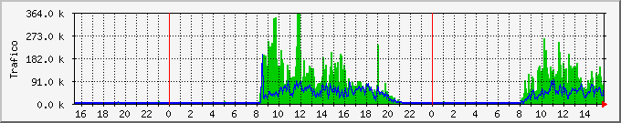
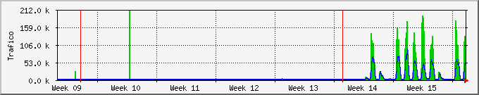
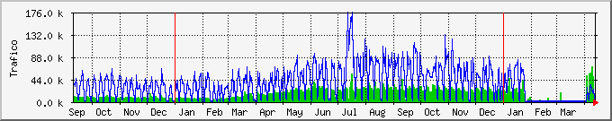

Analisis del trafico total de la interface eth0
Estadísticas actualizadas el Martes 15 de Abril de 2014 a las 15:44,
'localhost' ha estado funcionando durante 3:44pm up 8 days, 5:15, 3 users, load average: 0.72, 0.88, 0.89.
Gráfico diario (5 minutos : Promedio)

|
Máx |
Promedio |
Actual |
| Entrante: |
361.7 kB/s (35.3%) |
46.7 kB/s (4.6%) |
80.5 kB/s (7.9%) |
| Saliente: |
193.1 kB/s (37.7%) |
20.2 kB/s (3.9%) |
67.7 kB/s (13.2%) |
Gráfico semanal (30 minutos : Promedio)

|
Máx |
Promedio |
Actual |
| Entrante: |
288.6 kB/s (28.2%) |
36.7 kB/s (3.6%) |
91.6 kB/s (8.9%) |
| Saliente: |
111.3 kB/s (21.7%) |
17.4 kB/s (3.4%) |
55.7 kB/s (10.9%) |
Gráfico mensual (2 horas : Promedio)

|
Máx |
Promedio |
Actual |
| Entrante: |
211.2 kB/s (20.6%) |
9618.0 B/s (0.9%) |
88.8 kB/s (8.7%) |
| Saliente: |
91.6 kB/s (17.9%) |
4389.0 B/s (0.9%) |
49.4 kB/s (9.7%) |
Gráfico anual (1 día : Promedio)

|
Máx |
Promedio |
Actual |
| Entrante: |
69.4 kB/s (6.8%) |
12.4 kB/s (1.2%) |
2363.0 B/s (0.2%) |
| Saliente: |
174.9 kB/s (34.2%) |
35.3 kB/s (6.9%) |
1422.0 B/s (0.3%) |
| VERDE ### |
Tráfico entrante en Bytes por segundo |
| AZUL ### |
Tráfico saliente en Bytes por segundo |